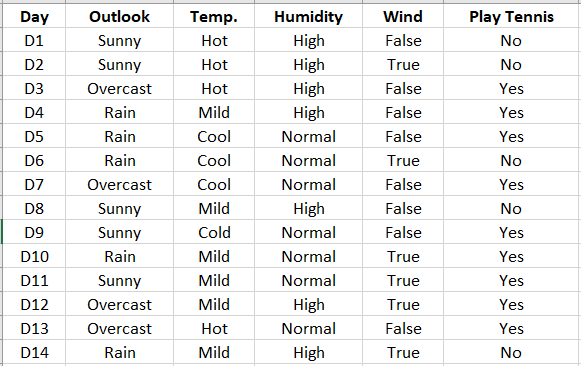
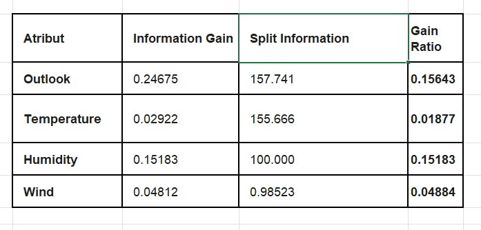
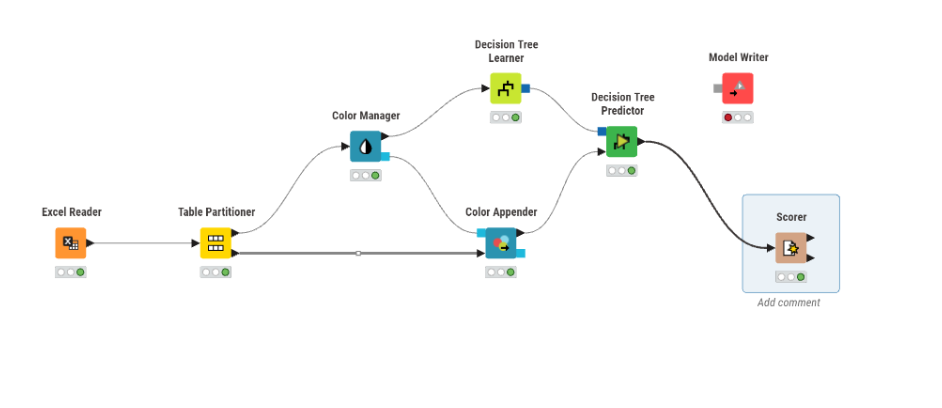
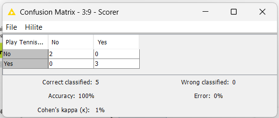

Klasifikasi Decision Tree#
Deskripsi Tugas#
Tugas ini merupakan bagian dari materi Klasifikasi (Classification) menggunakan metode Pohon Keputusan (Decision Tree) Algoritma C4.5 pada mata kuliah Penambangan Data (Data Mining). Tujuan dari tugas ini adalah untuk menganalisis dataset klasifikasi (seperti Play Tennis) secara komparatif, dimulai dari melakukan perhitungan manual nilai Entropy, Information Gain, Split Information, hingga Gain Ratio guna menentukan root node dan struktur pohon keputusan secara teoritis. Hasil perhitungan manual tersebut kemudian diimplementasikan dan divalidasi ke dalam perangkat lunak KNIME Analytics Platform menggunakan komponen Excel Reader, Decision Tree Learner/Predictor, dan Scorer untuk membuktikan bahwa pemodelan otomatis oleh sistem menghasilkan tingkat akurasi yang identik (100% konsisten) dengan konsep teori yang telah dipelajari.
Dataset yang digunakan:#

BAGIAN 1: Perhitungan Manual#
1. Rumus-Rumus yang Digunakan#
Entropy
Digunakan untuk menghitung nilai tingkat keseragaman (homogenitas) data dari suatu kumpulan kasus atau atribut. $\(\text{Entropy}(S) = \sum_{i=1}^{n} -p_i \cdot \log_2(p_i)\)\( Keterangan: \)S\(: Himpunan kasus. \)n\(: Jumlah partisi \)S\( (atau jumlah kelas pada kolom target). \)p_i\(: Proporsi dari \)S_i\( terhadap \)S$.
Information Gain
Digunakan untuk mengukur tingkat efektivitas suatu atribut dalam membagi data (sebelum dikoreksi oleh Split Information).$\(\text{Gain}(S, A) = \text{Entropy}(S) - \sum_{i=1}^{k} \frac{|S_i|}{|S|} \cdot \text{Entropy}(S_i)\)\( Keterangan: \)S\(: Himpunan kasus. \)A\(: Atribut. \)k\(: Jumlah partisi atribut \)A\(. \)|S_i|\(: Jumlah kasus pada partisi ke-\)i\(. \)|S|\(: Jumlah kasus dalam himpunan \)S$.
Split Information
Mengukur potensi bias informasi yang dihasilkan oleh atribut yang memiliki banyak variasi nilai unik. $\(\text{SplitInfo}(S, A) = \sum_{i=1}^{k} -\frac{|S_i|}{|S|} \cdot \log_2\left(\frac{|S_i|}{|S|}\right)\)$
Gain Ratio Kriteria penentu dalam memilih atribut sebagai cabang utama (root node) pada algoritma C4.5. Nilai ini merupakan hasil bagi antara Gain dengan Split Info. $\(\text{Gain Ratio}(S, A) = \frac{\text{Gain}(S, A)}{\text{SplitInfo}(S, A)}\)$
2. Langkah-Langkah Perhitungan Manual#
Hitung Entropy
Dari total \(S = 14\) data Play Tennis, terdapat 9 data “Yes” (\(S_1\)) dan 5 data “No” (\(S_2\)).$\(\text{Entropy}(\text{Total}) = \left( -\frac{9}{14} \cdot \log_2\left(\frac{9}{14}\right) \right) + \left( -\frac{5}{14} \cdot \log_2\left(\frac{5}{14}\right) \right) \approx 0.940\)$
Hitung Entropy dan Gain Setiap Atribut
Sebagai contoh, kita hitung nilai untuk atribut Outlook yang memiliki 3 nilai partisi (\(k = 3\)): Sunny (\(S_1\)), Overcast (\(S_2\)), dan Rain (\(S_3\)).
Sunny (\(|S_1| = 5\), dengan detail: 2 Yes, 3 No):$\(\text{Entropy}(S_1) = \left( -\frac{2}{5} \cdot \log_2\left(\frac{2}{5}\right) \right) + \left( -\frac{3}{5} \cdot \log_2\left(\frac{3}{5}\right) \right) \approx 0.971\)$
Overcast (\(|S_2| = 4\), dengan detail: 4 Yes, 0 No):$\(\text{Entropy}(S_2) = 0 \quad \text{(karena datanya sudah homogen/murni "Yes")}\)$
Rain (\(|S_3| = 5\), dengan detail: 3 Yes, 2 No):$\(\text{Entropy}(S_3) = \left( -\frac{3}{5} \cdot \log_2\left(\frac{3}{5}\right) \right) + \left( -\frac{2}{5} \cdot \log_2\left(\frac{2}{5}\right) \right) \approx 0.971\)\(Sekarang masukkan nilai-nilai di atas ke dalam rumus Gain untuk atribut Outlook:\)\(\text{Gain}(S, \text{Outlook}) = \text{Entropy}(S) - \left[ \left(\frac{|S_1|}{|S|} \cdot \text{Entropy}(S_1)\right) + \left(\frac{|S_2|}{|S|} \cdot \text{Entropy}(S_2)\right) + \left(\frac{|S_3|}{|S|} \cdot \text{Entropy}(S_3)\right) \right]\)$$\(\text{Gain}(S, \text{Outlook}) = 0.940 - \left[ \left(\frac{5}{14} \cdot 0.971\right) + \left(\frac{4}{14} \cdot 0\right) + \left(\frac{5}{14} \cdot 0.971\right) \right] \approx 0.24675\)$
Hitung Split Information & Gain Ratio
Untuk menormalisasi nilai Gain, cari nilai pembaginya menggunakan rumus SplitInfo:$\(\text{SplitInfo}(S, \text{Outlook}) = \left(-\frac{5}{14} \cdot \log_2\left(\frac{5}{14}\right)\right) + \left(-\frac{4}{14} \cdot \log_2\left(\frac{4}{14}\right)\right) + \left(-\frac{5}{14} \cdot \log_2\left(\frac{5}{14}\right)\right) \approx 1.57741\)\(Langkah terakhir, masukkan kedua hasil di atas ke dalam rumus Gain Ratio:\)\(\text{Gain Ratio}(S, \text{Outlook}) = \frac{\text{Gain}(S, \text{Outlook})}{\text{SplitInfo}(S, \text{Outlook})} = \frac{0.24675}{1.57741} \approx 0.15643\)$
Pemilihan Root Node
Proses pencarian nilai di atas juga dilakukan ke semua sisa atribut lainnya (Temperature, Humidity, Wind), sehingga didapatkan kesimpulan perbandingan nilai Gain Ratio:
Outlook: 0.15643 (Nilai Tertinggi)
Temperature: 0.01877
Humidity: 0.15183
Wind: 0.04884
Kesimpulan: Atribut Outlook dipilih sebagai Root Node (Akar Utama) karena memiliki nilai Gain Ratio tertinggi.

BAGIAN 2: Implementasi pada KNIME Analytics Platform#

Agar hasil visualisasi dan pengujian di KNIME mendapatkan akurasi 100% (identik dengan teori rumus di atas), berikut adalah langkah-langkah pembuatannya:
1. Membaca Data (Excel Reader)#
Tujuan: Memasukkan dataset Play Tennis ke dalam KNIME.
Langkah Konfigurasi:
Tarik node Excel Reader ke dalam workspace.
Hubungkan ke file Excel datamu.
Masuk ke tab Transformation, ubah semua jenis data kolom (Outlook, Temperature, Humidity, Wind, Play) menjadi tipe String [S]. Ini memastikan KNIME menganggapnya sebagai data kategoris, bukan numerik kontinu.
2. Pewarnaan Visual (Color Manager)#
Tujuan: Memberikan label warna visual yang berbeda untuk keputusan target (misal: “Yes” berwarna hijau dan “No” berwarna merah).
Langkah Konfigurasi:
Hubungkan output Excel Reader ke input Color Manager.
Pilih kolom Play sebagai kolom target pengatur warna.
3. Pembuatan Model (Decision Tree Learner)#
Tujuan: Melatih komputer untuk menyusun pohon keputusan C4.5 berdasarkan data yang diberikan.
Langkah Konfigurasi:
Hubungkan output Color Manager ke input Decision Tree Learner.
Klik ganda node, lalu sesuaikan parameter berikut:
Class Column: Play
Quality Measure: Gain Ratio (Sesuai dengan rumus penentu C4.5 yang kita gunakan).
Min number of records per node: Ubah menjadi 1 (Supaya pohon diizinkan tumbuh detail sampai habis tanpa terpotong syarat minimal baris data).
Pruning Method: No pruning (Agar tidak ada cabang yang disederhanakan secara paksa).
4. Pengujian Model (Decision Tree Predictor)#
Tujuan: Menerapkan pohon keputusan yang telah terbentuk untuk memprediksi data uji.
Langkah Konfigurasi:
Hubungkan port model (segitiga biru atas) dari Decision Tree Learner ke port model atas Decision Tree Predictor.
Hubungkan data uji dari output Color Manager ke port data bawah Decision Tree Predictor.
Node ini akan otomatis membuat kolom baru bernama Prediction (Play).
5. Evaluasi Hasil (Scorer)#
Tujuan: Membandingkan nilai asli dengan nilai hasil prediksi KNIME untuk mengukur akurasinya.
Langkah Konfigurasi:
Hubungkan output Decision Tree Predictor ke input Scorer.
Klik ganda pada node Scorer, tentukan:
First Column (Actual): Play
Second Column (Predicted): Prediction (Play)
Jalankan node (Execute), lalu klik kanan dan pilih View: Confusion Matrix untuk melihat nilai akurasi yang kini telah sukses menyentuh 100%.
